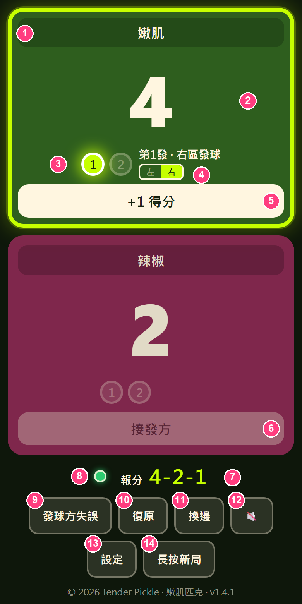
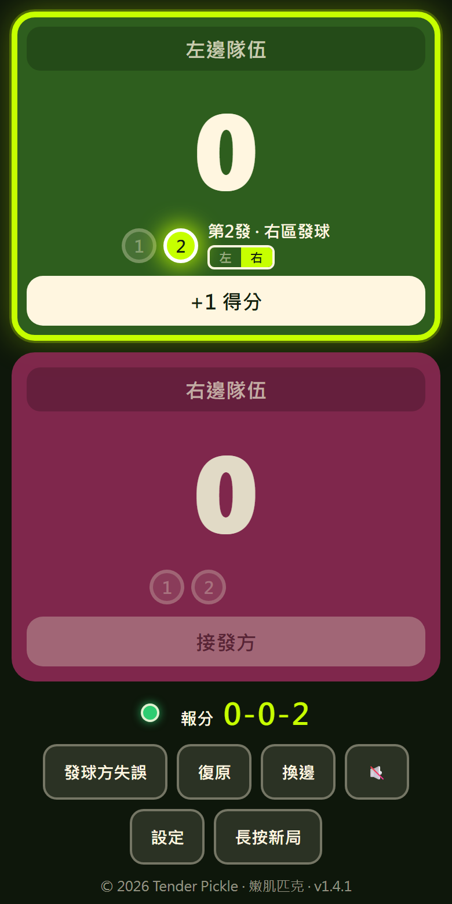
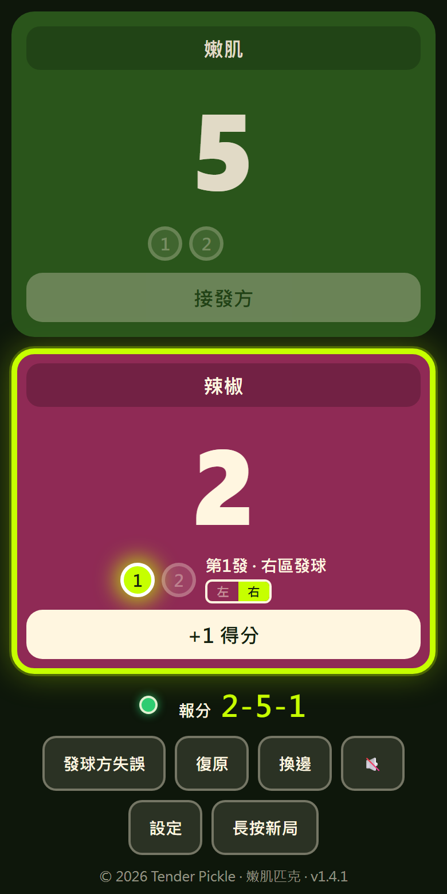
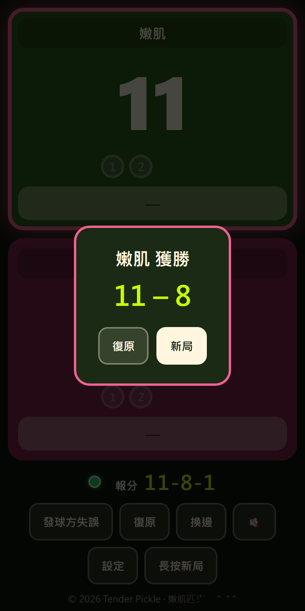
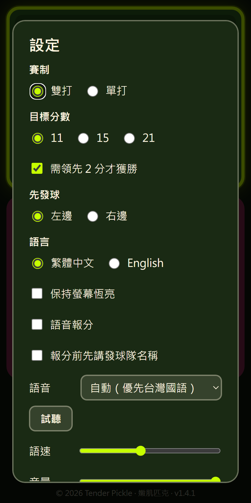
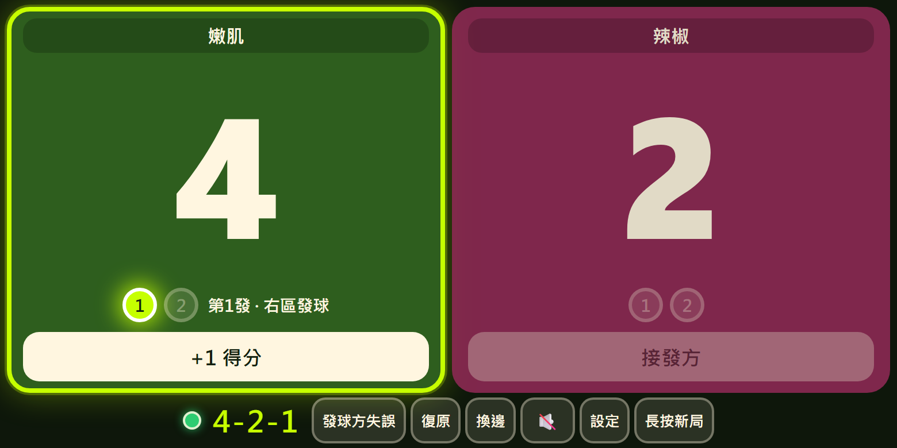

Tender Pickle Scoreboard · v1.4.1 · 無廣告、免註冊、可離線的匹克球計分板
開啟計分板專為匹克球設計的計分板，最大的特色是用燈號顯示現在是第 1 發還是第 2 發，再也不會忘記誰該發球、該站哪一區。
4-2-1 的三段報分。網址：https://hsiao0922.github.io/tender-pickle-scoreboard/
開啟網址後，點網址列右側的安裝圖示（螢幕加下箭頭），或選單 →「安裝 Tender Pickle Scoreboard」。

1隊名：點一下可輸入，留空則顯示「左邊隊伍／右邊隊伍」。
2比分：該隊目前得分。
3發球燈號：亮起的是目前發球員（第 1 發或第 2 發）。
4發球區：左／右 亮起處就是應站的發球區（隊分偶數右區、奇數左區）。
5+1 得分：發球方贏得這一球時按。外框螢光綠的就是發球方。
6接發方：按鈕鎖定，不能誤加分。
7報分：照這組數字唱分，如 4-2-1。
8連線燈：綠色＝有網路，紅色＝離線（仍可正常使用）。
9發球方失誤：發球方輸掉這一球時按。
10復原：回上一步，按錯時使用。
11換邊：交換左右隊伍位置（與場上換邊同步）。
12喇叭：開關語音報分。
13設定：賽制、分數、語言、語音等。
14長按新局：按住約 0.7 秒才會清空比分重新開始。
手機橫放、平板與電腦也能使用，版面會自動調整。
採傳統換發制（Side-out）：只有發球方能得分。下面是一段實際流程：
| 步驟 | 操作 | 報分 | 說明 |
|---|---|---|---|
| 開局 | — | 0-0-2 | 先發球隊只有一個發球員，所以是「第 2 發」 |
| 1 | 左隊按 +1 得分 | 1-0-2 | 發球隊得 1 分，換到左區發球 |
| 2 | 左隊發球失誤 | 0-1-1 | 第 2 發失誤 → 換發，右隊從第 1 發開始 |
| 3 | 右隊按 +1 得分 | 1-1-1 | 右隊得分 |
| 4 | 右隊發球失誤 | 1-1-2 | 第 1 發失誤 → 換同隊夥伴發球（第 2 發） |
| 5 | 右隊再失誤 | 1-1-1 | 第 2 發失誤 → 換發給左隊，從第 1 發開始 |

0-0-2

按錯了？隨時按「復原」。比賽結束：達到目標分數（預設 11 分且領先 2 分）會跳出獲勝視窗，按「新局」繼續。
在設定中切換為單打：只報兩個數字（如 4-2），沒有第幾發，發球區規則相同（自己分數偶數站右、奇數站左）。
發球方分數 – 接發方分數 – 發球員編號(1 或 2)。0-0-2 開始，只有一位發球員，第一次失誤直接換發。目前尚未支援 Rally 計分（每球得分制）。

| 項目 | 說明 |
|---|---|
| 賽制 | 雙打／單打 |
| 目標分數 | 11、15 或 21 |
| 需領先 2 分 | 勾選＝達標後還要贏對方 2 分 |
| 先發球 | 開局由左邊或右邊隊伍先發 |
| 語言 | 繁體中文／English |
| 保持螢幕恆亮 | 比賽中螢幕不會自動關閉 |
| 語音相關 | 見下一節 |
| 動作 | 按鍵 |
|---|---|
| 左邊隊伍得分 | ← |
| 右邊隊伍得分 | → |
| 發球方失誤 | Space |
| 復原 | Z |
| 換邊 | F |
| 新局 | 點「新局」按鈕後確認 |

可以。第一次連網開啟後，之後離線也能計分。右上連線燈變紅只是表示離線，不影響使用。
不會上傳，只存在本機瀏覽器的 localStorage。清除網站資料、換手機或換瀏覽器就不會有舊資料。
程式採用「有網路時優先更新」，下次開啟（有連網）就會套用新版。頁尾和設定底部會顯示目前版本號。
請確認用 Safari 開啟（不是 LINE／FB 內建瀏覽器）。若畫面上看不到分享按鈕，請在網址列旁的「⋯」選單中尋找「分享」。
請用 Chrome 並先把網頁完整載入一次；仍沒有時，選單內的「加到主畫面」也可以達到相同效果。
檢查手機是否靜音、音量與計分板內的音量；先點一下畫面；再按設定中的「試聽」測試。
像一般 App 一樣長按圖示 → 移除（iPhone）或解除安裝（Android）。